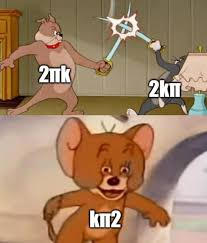
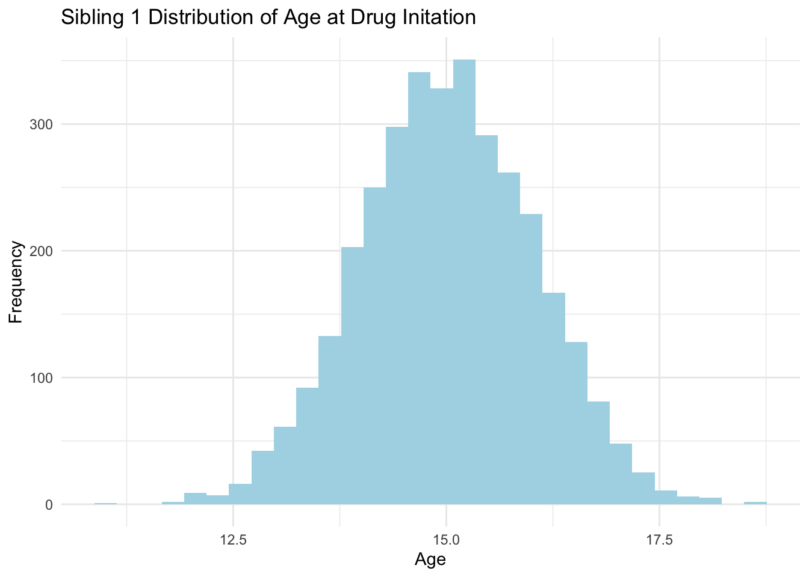
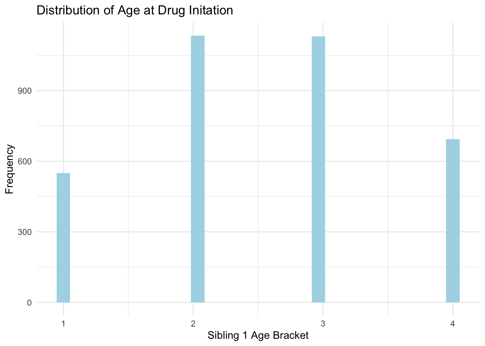
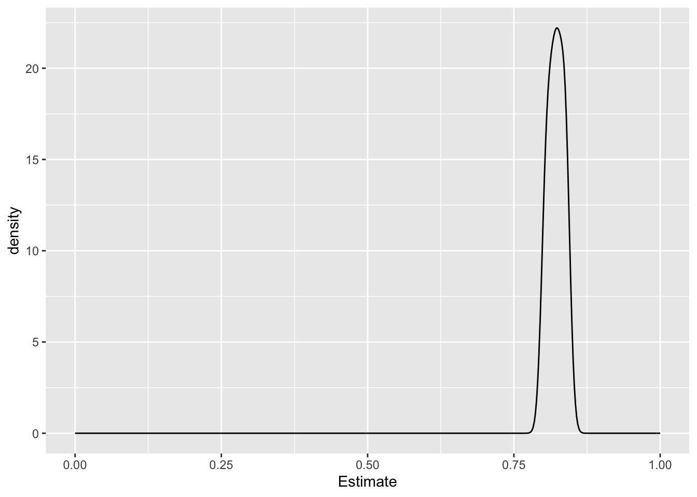
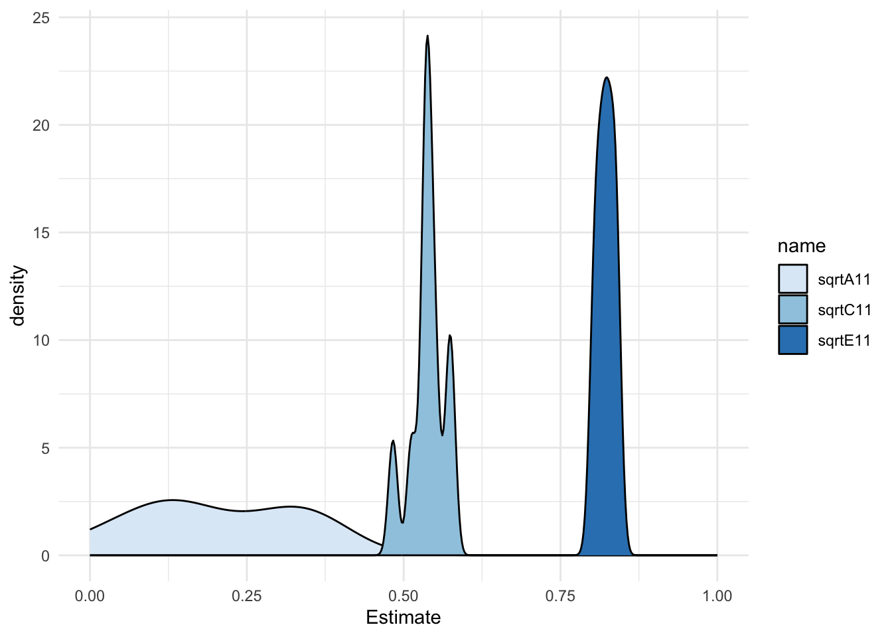

Automating the Hermine Interval ACE procedure
Loading packages and sourcing my BG helpers
library(BGmisc)
library(ggplot2)
library(ggpedigree)
library(OpenMx)
library(EasyMx)
library(ACEsimFit)
library(tidyr)
library(dplyr)
library(purrr)
library(polycor)
library(lattice)
library(broom)
library(knitr)
library(kableExtra)
source("/Users/caileyfay/Documents/Research/Github/risky_gambling/helpers.R")
source("/Users/caileyfay/Documents/Research/Github/risky_gambling/EasyMx/R/emxBehaviorGenetics.R")
source("/Users/caileyfay/Documents/Research/Github/risky_gambling/data/miFunctions.R")First I create some simulated data to work on, and the I save all my results as a data frame.
sim <- Sim_Fit(
GroupNames = c("KinPair1", "KinPair2"),
GroupSizes = c(2000, 2000),
nIter = 10,
SSeed = 2,
GroupRel = c(.5, 0.25),
GroupR_c = c(1, 1),
mu = c(15, 15),
ace1 = c(.3, .2, .5),
ace2 = c(.3, .2, .5),
ifComb = FALSE,
lbound = FALSE,
saveRaw = TRUE)
df_list <- map(sim, ~ as.data.frame(.x$data))
list2env(df_list, envir = .GlobalEnv)The next step is to make it plausible for drug initation data - that means some people need to have NAs to represent non-use. I also have to make this into a loop or use the map function to scale it up to handle all the iterations.
for (i in 1:length(df_list)) {
df_list[[i]] <- df_list[[i]] %>%
mutate(y1 = case_when(
R == .5 ~ ifelse(runif(n()) < 0.20, NA, y1),
R == .25 ~ ifelse(runif(n()) < 0.10, NA, y1))) %>%
mutate(y2 = case_when(
is.na(y1) ~ NA,
TRUE ~ y2
)) %>%
mutate(Ord_1 = case_when(
y1 <= 14 ~ 1,
y1 <= 15 ~ 2,
y1 <= 16 ~ 3,
y1 >= 17 ~ 4,
is.na(y1) ~ 4,
),
Ord_2 = case_when(
y2 <= 14 ~ 1,
y2 <= 15 ~ 2,
y2 <= 16 ~ 3,
y2 >= 17 ~ 4,
is.na(y2) ~ 4,
)) %>%
mutate(RCoef = R)
}
list2env(df_list, envir = .GlobalEnv)ACE modeling (Hermine’s Method) with Iteration 1
Ordinal Results
| A | C | E | |
|---|---|---|---|
| Unstandardized | 0.32412002 | 0.21580713 | 0.00114690 |
| Standardized | 0.59903080 | 0.39884954 | 0.00211967 |
Interval Results
| A | C | E | |
|---|---|---|---|
| Unstandardized | 0.22260689 | 0.02414238 | 0.16801825 |
| Standardized | 0.53670280 | 0.05820701 | 0.40509019 |
I got mad trying to plot a path diagram with the openMx functions (they are totally useless and don’t work with my mxobjects, which is ironic). So I asked Gemini how it would do this, given an openMx ACE output. For your entertainment, this is what it gave me.
It reminds me of the graphing equivalent to this gem.
knitr::include_graphics("funny_embed.jpeg")
### Descriptives: Interval ACE uses the first variable, Ordinal uses the second.

Interval ACE with Easymx
emxTwinModel function already modified (sourced at the beginning).
model <- emxTwinModel(model="Cholesky", relatedness ='RCoef', data=Iteration1, run=TRUE, use=c('y1','y2'), name='model', components='ACE')## Running model with 4 parameterssumACE## Summary of uniACEvc_R_x
##
## free parameters:
## name matrix row col Estimate Std.Error A
## 1 meany1 meanG 1 1 15.01102566 0.017464619
## 2 meany2 meanG 1 2 15.01633050 0.017462359
## 3 VA11 VA 1 1 0.47181234 0.121972831
## 4 VC11 VC 1 1 0.15537817 0.049164100
## 5 VE11 VE 1 1 0.40990030 0.076536822
##
## confidence intervals:
## lbound estimate ubound note
## uniACEvc_R_x.US[1,1] 0.232975539 0.47181234 0.71344794
## uniACEvc_R_x.US[1,2] 0.058159718 0.15537817 0.25133387
## uniACEvc_R_x.US[1,3] 0.261268509 0.40990030 0.56227104
##
## Model Statistics:
## | Parameters | Degrees of Freedom | Fit (-2lnL units)
## Model: 5 6773 19109.7
## Saturated: NA NA NA
## Independence: NA NA NA
## Number of observations/statistics: 3389/6778
##
## Information Criteria:
## | df Penalty | Parameters Penalty | Sample-Size Adjusted
## AIC: 5563.7002 19119.700 19119.718
## BIC: -35943.2091 19150.342 19134.454
## To get additional fit indices, see help(mxRefModels)
## timestamp: 2026-04-26 13:47:53
## Wall clock time: 0.037484884 secs
## optimizer: SLSQP
## OpenMx version number: 2.22.10
## Need help? See help(mxSummary)Now I want to repeat this for the other 9 iterations
run_int <- function(df) {
model <- emxTwinModel(model="Cholesky", relatedness ='RCoef', data=df, run=TRUE, use=c('y1','y2'), name='model', components='ACE')
}
results <- lapply(df_list, run_int)## Running model with 4 parameters
## Running model with 4 parameters
## Running model with 4 parameters
## Running model with 4 parameters
## Running model with 4 parameters
## Running model with 4 parameters
## Running model with 4 parameters
## Running model with 4 parameters
## Running model with 4 parameters
## Running model with 4 parametersThis is not so easy
Now I have a big list of model outputs, but I can’t do anything with it. I want means, parameters, and I want it clean and easy like it was for the hermine scripts.
Option 1: Try to figure out a clean way of extracting parameters with EasyMx
R1 <- summary(results$Iteration1)
estimates_df1 <- R1$algebra
#now scale it up so I don't have to repeat manually ten times
#can't figure it out yet with lapply so I am going to for loop it
estimates_list <- lapply(results, function(fit) {
s <- summary(fit)
return(s$parameters)
})
#fuck it
R1 <- summary(results$Iteration1)
estimates_df1 <- R1$parameters
R2 <- summary(results$Iteration2)
estimates_df2 <- R2$parameters
R3 <- summary(results$Iteration3)
estimates_df3 <- R3$parameters
R4 <- summary(results$Iteration4)
estimates_df4 <- R4$parameters
R5 <- summary(results$Iteration5)
estimates_df5 <- R5$parameters
R6 <- summary(results$Iteration6)
estimates_df6 <- R6$parameters
R7 <- summary(results$Iteration7)
estimates_df7 <- R7$parameters
R8 <- summary(results$Iteration8)
estimates_df8 <- R8$parameters
R9 <- summary(results$Iteration9)
estimates_df9 <- R9$parameters
R10 <- summary(results$Iteration10)
estimates_df10 <- R10$parameters
#just in case I want to do something with this
eh <- rbind(estimates_df1,estimates_df2, estimates_df3, estimates_df4, estimates_df5, estimates_df6, estimates_df7, estimates_df8, estimates_df9, estimates_df10)
eh <- eh %>%
mutate(It = rep(1:10, each = 4))
A <- eh %>%
filter(name == "sqrtA11") #these need to be transformed so that they are actually the A ( or C or E ) so I atually probably need to approach this diffrently
C <-eh %>%
filter(name == "sqrtC11")
E <- eh %>%
filter(name == "sqrtE11")Option 2: Try to build a function that passes each iteraction to the hermine method
This seems hard.
Phew, Time to Start Plotting
now that the parameters are workable, I want to graph them as 3 overlapping density distributions
ggplot(A, mapping = aes(x=Estimate)) +
geom_density() +
xlim(0, 1)
ggplot(C, mapping = aes(x=Estimate)) +
geom_density() +
xlim(0, 1)
ggplot(E, mapping = aes(x=Estimate)) +
geom_density() +
xlim(0, 1)
#Dubious
ggplot(eh, mapping = aes(x = Estimate, fill = name)) +
geom_density() +
xlim(0,1) +
scale_fill_brewer() +
theme_minimal()## Warning: Removed 10 rows containing non-finite outside the scale range (`stat_density()`).
Need to do the ordinal with easyMx - will need to modify the function
Trying out this function